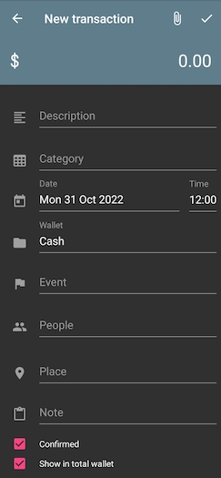

Transaction
This is the basic unit of the app and your finances. There are two types of transactions:
- Expenses (like purchases)
- Income (salary, tips, prizes)
Creating a Transaction
The transactions screen is the default view when opening the app. You can also get there by tapping Left menu > any wallet. Click the + button in the lower right corner.
Tip
On Android 7 and above, you can also press the app icon until a menu pops up, then select "New transaction"
Every transaction must have a category, a money amount, time, and a wallet. Everything else is optional, and only serves as additional "tags" to categorize the transaction. All fields can be edited after you save it.
A description of every field follows, from top to bottom.

The money amount can be entered by tapping on the 0 in the top right corner. You will be brought to a calculator. Press = when done.
The description is how the transaction will be listed.
The category determines whether it is an expense or an income.
You can edit the date and time, which is set to now by default. If a transaction didn't happen yet, rather than choosing a future time, just uncheck the "confirmed" checkbox (see below).
The wallet is the account the money came out of.
The event can be selected if the transaction happened during the event's days. This is like a super-category.
You may select as many people as you like. This doesn't change how the transaction is recorded, except that it will also be listed under that person's name in the people tab.
The place is where the transaction took place.
The note is any additional text you want to add that is too much for the description.
Important
There are two checkboxes at the bottom. Make sure to check them both if you want to see this transaction in reports.
If the "confirmed" checkbox is unchecked, then the wallet's balance won't be affected.
If the "show in total wallet" checkbox is unchecked, then the transaction will be hidden from the Total Wallet.
Tap the checkmark in the upper right corner, above the money, to save
Editing a transaction
Open the app's Left menu > Transactions, tap the transaction you want to edit, then tap the edit button in the top right corner.
Finding a transaction
There are a few ways to find a transaction.
The simplest is to select the wallet from the left menu. This brings you to the transactions list. This list has a search bar (tap the magnifying glass in the top right corner). If you don't remember which wallet, you can switch to the total wallet to see all the transactions.
To find it by date, tap the calendar in the top right corner and swipe to a date. The list will filter by transactions from that day.
To find it by event, go to Left menu > Events, switch to the Completed tab, tap the event, tap the list button in the top right (looks like 3 horizontal lines), and the list will contain the transactions from that event.
To find it by category, go to Left menu > Categories, tap the category, tap the list button in the top right (looks like 3 horizontal lines), and the list will contain the transactions under that category.
To find it by person, go to Left menu > People, tap on the person, tap the list button in the top right (looks like 3 horizontal lines), and the list will contain the transactions this person was part of.
To find it by place, go to Left menu > Places, tap on the place, tap the list button in the top right (looks like 3 horizontal lines), and the list will contain the transactions at this place.